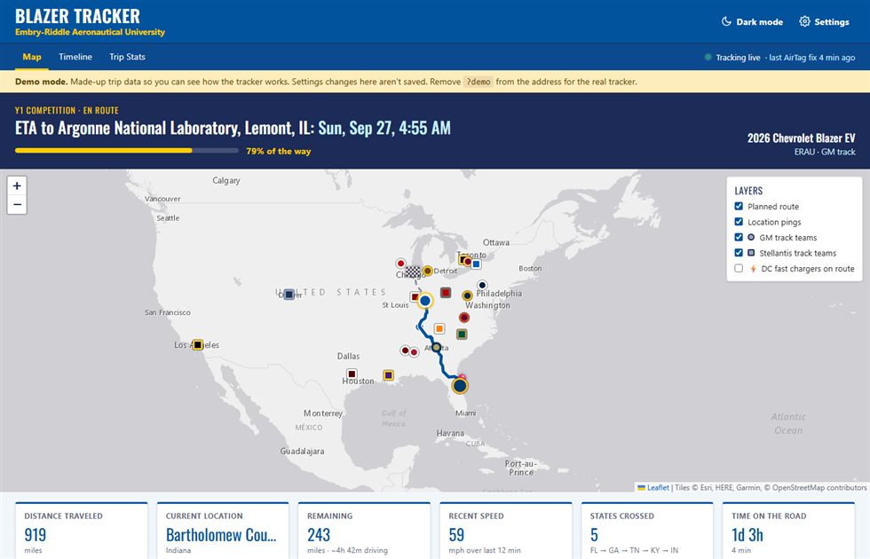
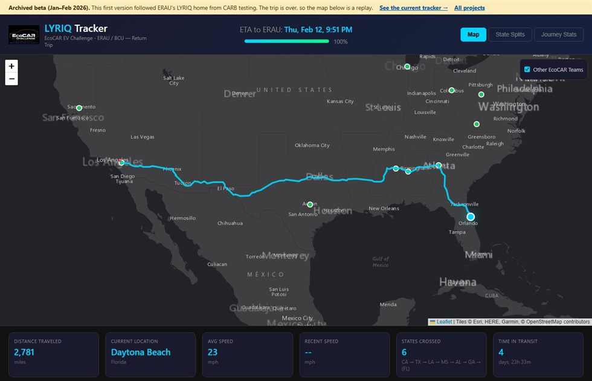

EcoCAR Vehicle Tracker
A public live map of the team's Chevy Blazer EV on its way to events, powered by an AirTag and a Mac. Anyone with the link sees the route, ETA and states crossed. At an event it switches to "at the venue since…".
- A settings gear to edit the event, route, stops and vehicle from any device
- Every EcoCAR Innovation Challenge school on the map, in school colors, split by GM and Stellantis track
- ERAU-styled light and dark themes, a DC fast charger layer, and a demo mode

Where it started
LYRIQ Tracker Beta · Jan–Feb 2026
The first version, hard-coded for one trip: bringing ERAU's Cadillac LYRIQ home from CARB emissions testing in Riverside, CA, about 2,800 miles. It's archived now, so the map replays that drive.
View the archived beta →